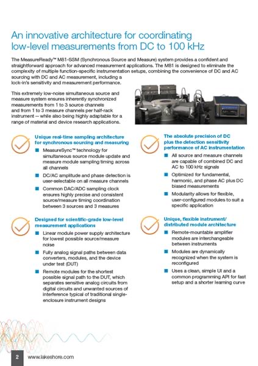
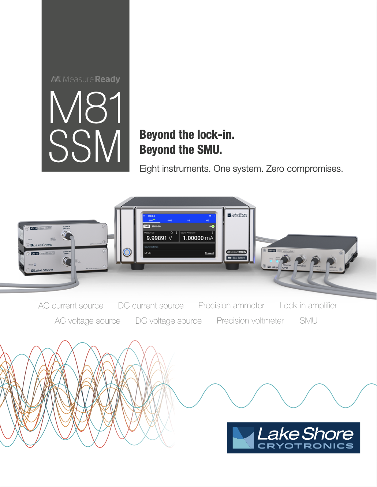
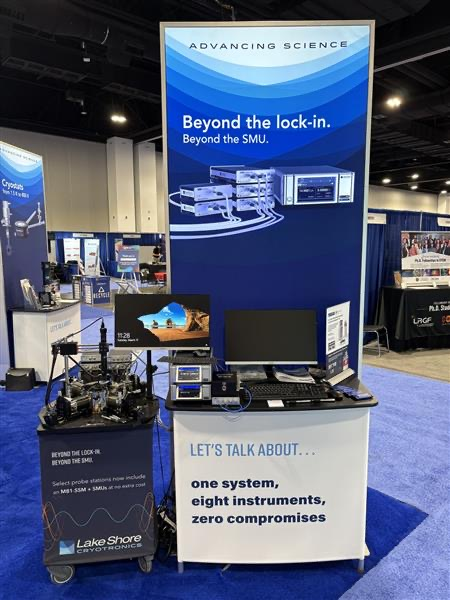
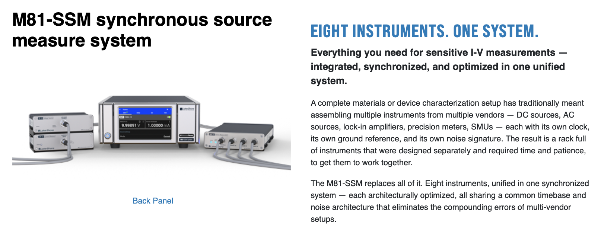
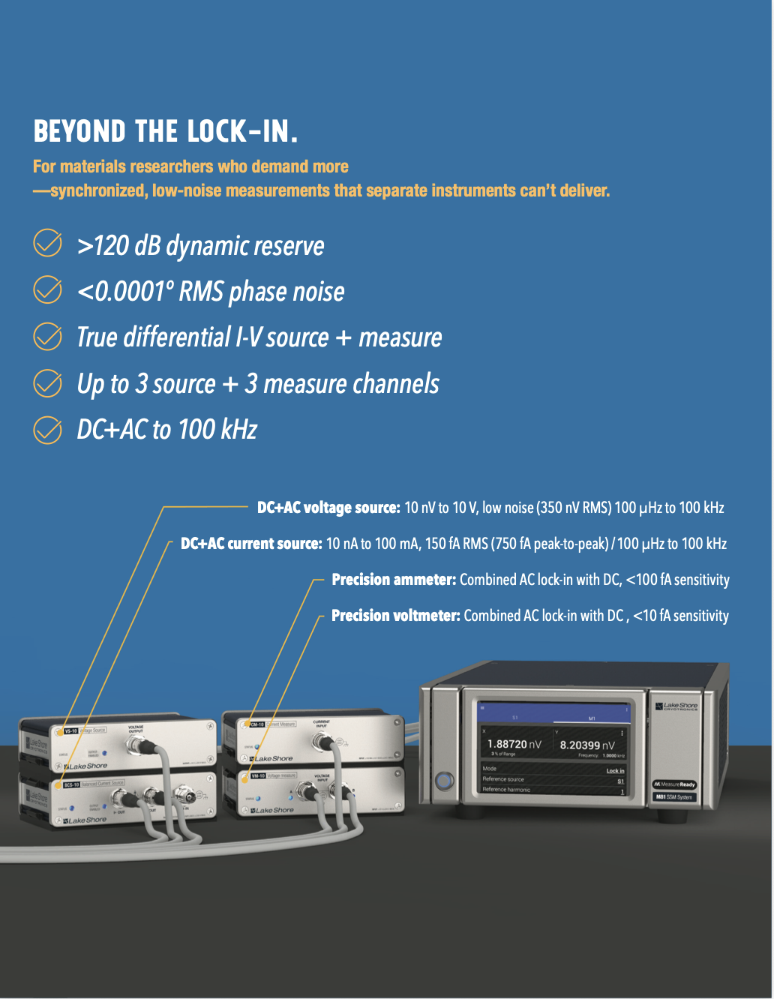
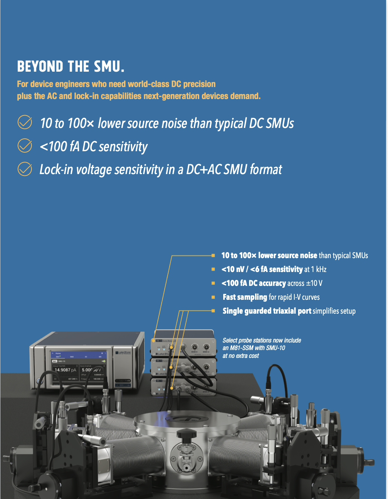
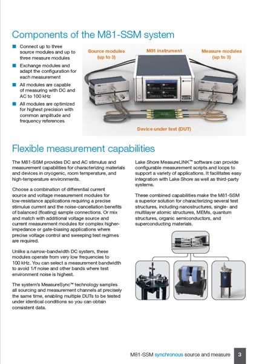
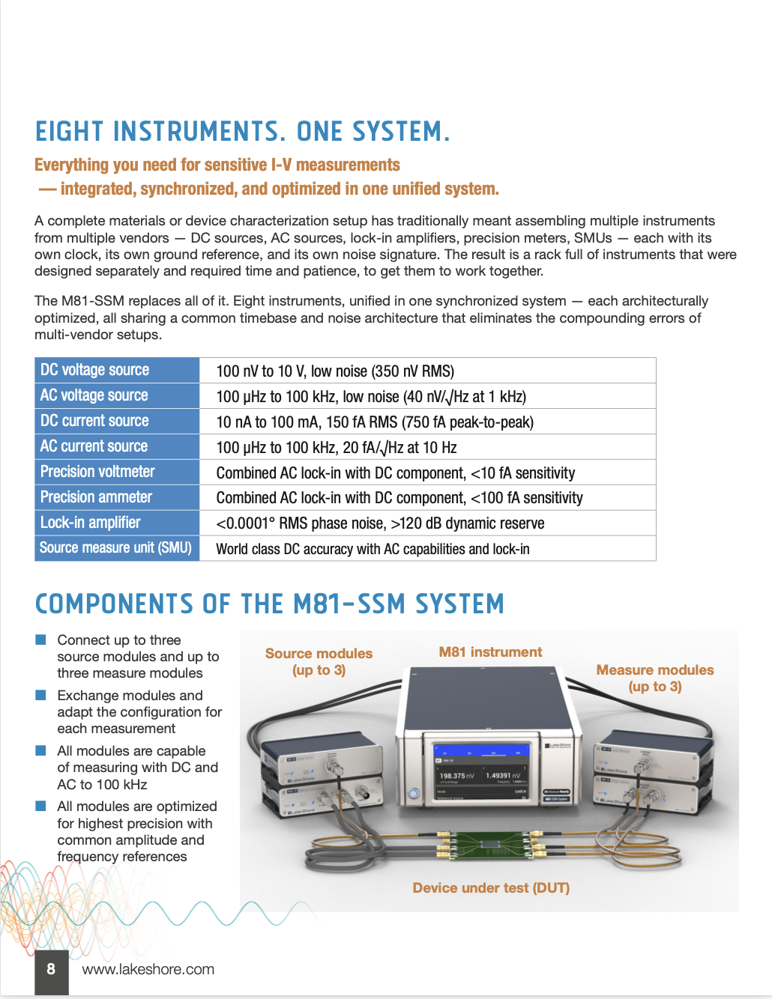
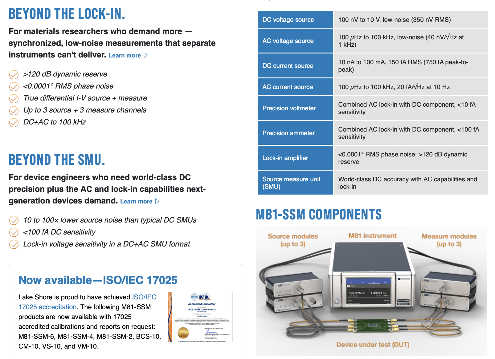

The MeasureReady™ M81-SSM was a genuine technical breakthrough that wasn't selling. Customers couldn't categorize it, so they couldn't evaluate it. They didn't know what it was, which meant they couldn't see why it was better. The problem wasn't the product. It was the language.
The M81-SSM combined synchronous DC and AC sourcing and measurement into a single modular platform: replacing entire racks of multi-vendor equipment. It wasn't simply a lock-in amplifier, wasn't simply an SMU. It did more than both.
That novelty was also the problem. Customers encountered the product, tried to compare it to instruments they already owned, found the comparison incomplete, and stalled.
"After in-person conversations with our sales team, close rates exceeded 80%. The product had genuine pull. The marketing wasn't doing the work that people were doing in rooms."
End-of-year sales figures in late 2024 confirmed what the close-rate data implied: the M81 was underperforming relative to its capabilities. The gap between what a salesperson could explain and what the marketing said on its own was the entire problem, made visible.
Three months of competitive analysis, market research, and internal sales conversations surfaced the core issue: the M81 needed a conceptual anchor before customers could evaluate it. Without one, every explanation required referencing the instruments it wasn't: which reinforced comparison to existing categories rather than establishing a new one.
Internal debate produced one strong candidate: "A better lock-in amplifier." It had the right instinct: ground the product in a familiar reference: but the execution was wrong. It would collapse the product into one category, erase the device engineer market entirely, and understate the product's actual scope.
Before: Original brochure cover: technical architecture as headline, no category anchor

Before: Original brochure p.2: feature-list structure, architecture-first hierarchy
Before: Original website: same feature-first messaging, no market anchor
The insight: the M81 needed to honor a familiar category and signal that the familiar category was insufficient to contain it. Two things at once.
One word did the work that paragraphs couldn't. Beyond gave customers an anchor: a category they already understood: and simultaneously signaled that the anchor was insufficient. It worked across both target markets with structurally parallel logic, and it preserved the product's full breadth where "better" would have narrowed it.
Supporting the taglines was a subhead that addressed a second risk head-on:
Eight instruments. One system. Zero compromises.
This line existed to preempt a predictable objection. A product that claimed to replace eight separate instruments risked being dismissed as a jack-of-all-trades: capable at everything, mastered at nothing. The concern was real: customers in scientific instrumentation have high standards and deep loyalty to best-in-class tools.
The answer wasn't to soften the claim. It was to harden it. The M81 wasn't a compromise between capabilities: it was architecturally optimized for each function simultaneously, with a unified timebase and noise architecture that multi-vendor racks physically cannot replicate. "Zero compromises" didn't just defend against the objection; it turned it into a proof point. The integration is the performance advantage.

Final brochure cover: complete messaging hierarchy in executed form
The taglines anchored a structural redesign of every customer-facing touchpoint. The messaging hierarchy shifted: problem first, concept second, technical validation third.
All copy written by me. Much of the visual creative executed by me. The simultaneity was deliberate: a clean break across all channels so every customer touchpoint reflected the same positioning logic regardless of entry point.
The SMU-10 module: a new addition targeting the semiconductor market: was repositioned at the same time as the core M81, making the two taglines explicitly complementary. Same platform, same strategic architecture, two market expressions.

Trade show deployment: messaging live in the field

After: New website hero: problem-first, "Eight Instruments. One System."

New brochure: research market

New brochure: industrial market
I had been advocating for a messaging change for approximately a year before the organization was ready to act. The SMU-10 module development created the forcing function: it needed new messaging, and I was able to overhaul both at once.
By mid-2025, the M81 product line had already surpassed its full prior-year revenue. The inflection occurred within months of the messaging overhaul going live: compressing what would typically be a multi-year repositioning cycle into a single focused effort.
The 80%+ in-person close rate that first identified the problem remained the north star throughout: the goal was to close the gap between what a salesperson could accomplish in a room and what the marketing could accomplish on its own.

Before: Old brochure: feature-explanation structure

After: New brochure: same content, problem-first hierarchy

Live website: both market segments and eight-instrument proof table
An unusually high close rate after in-person contact is a diagnostic signal. It means the product has pull that the marketing isn't delivering. The gap between what a salesperson explains and what the marketing says on its own is the positioning problem, made visible.
Customers can't evaluate differentiation without a frame of reference. The anchor has to come first. Leading with technical architecture before establishing what something is like is a losing sequence.
Positioning the M81 as better at a thing it wasn't fully captured by would have permanently narrowed its market. One word can preserve strategic breadth or destroy it.
I saw this problem a year before I had the room to solve it. Identifying the gap and building the case for change are not the same thing. Both matter. The year of advocacy created the context that made rapid execution possible when the moment arrived.